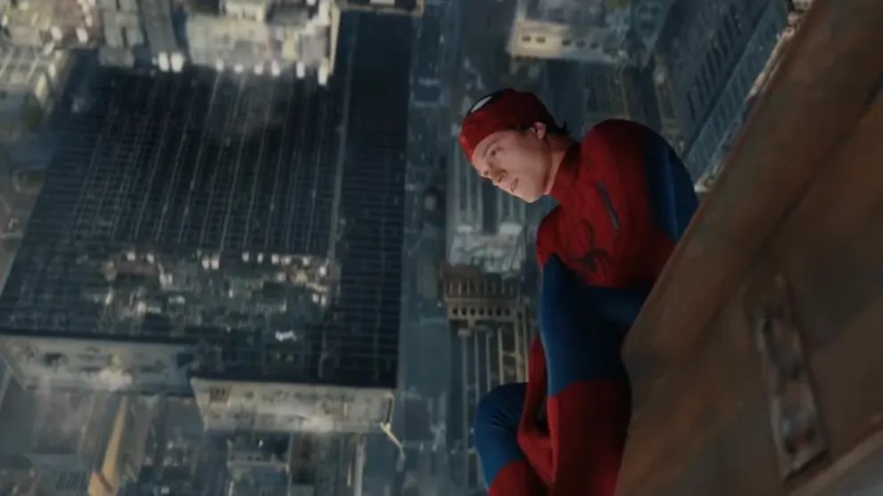
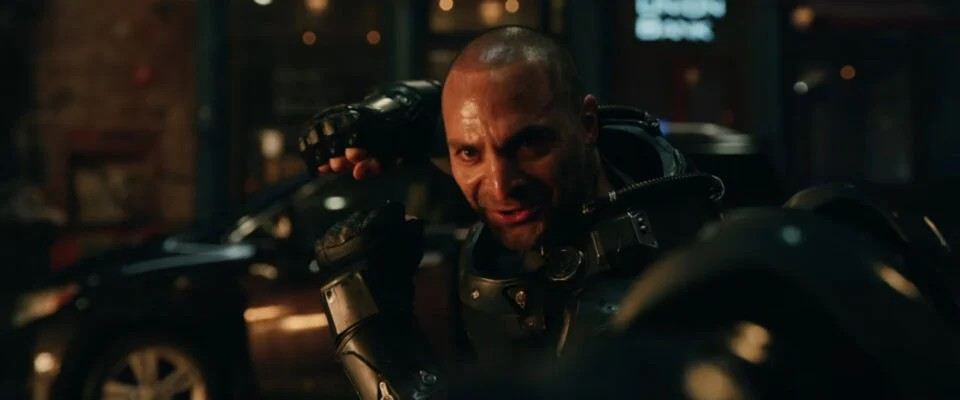
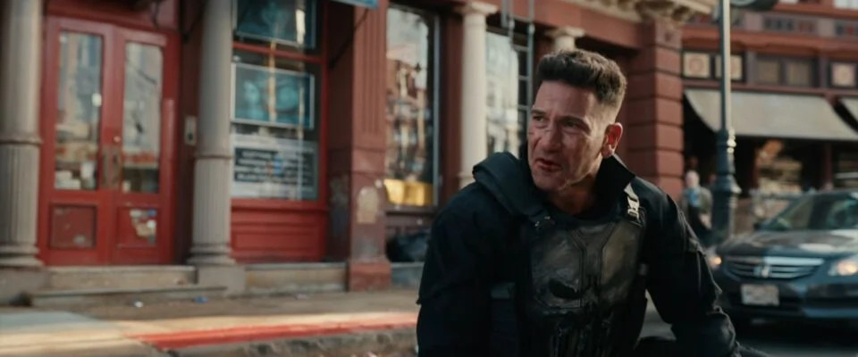
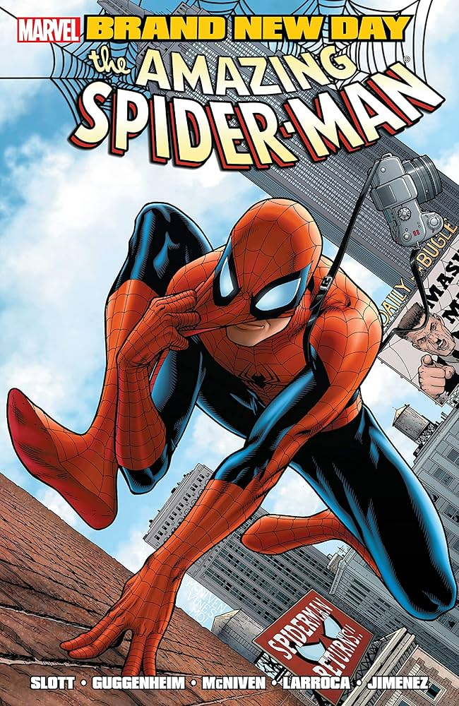

HABEMUS TRÁILER:
SPIDER-MAN BRAND NEW DAY

Tras meses de teorías, por fin tenemos el primer vistazo a la nueva era del arácnido en el MCU. Aunque el título "Brand New Day" remite inevitablemente al polémico cómic de Dan Slott, el avance deja claro que la película tomará un rumbo distinto, enfocándose en las consecuencias directas de No Way Home.
UN SPIDEY MÁS CALLEJERO Y LETAL
Lo que más destaca del tráiler es el tono. Olvida las batallas espaciales; aquí vemos a un Peter Parker lidiando con el crimen de Nueva York. Las tomas son espectaculares y los easter eggs a portadas clásicas son un regalo para los fans.

La gran sorpresa es el regreso de Michael Mando como Escorpión, quien finalmente luce un diseño imponente. Además, la aparición de The Hand sugiere que veremos secuencias de acción más violentas y oscuras, propias del mundo ninja.
ALIADOS Y AMENAZAS DE PESO
La conversación en redes se la ha robado Jon Bernthal. El regreso de The Punisher no es solo un cameo; su choque ideológico con Spider-Man pondrá a prueba la brújula moral de un Peter que está más solo que nunca.

El tráiler confirma que Zendaya (MJ) y Jacob Batalon (Ned) están de vuelta, pero el dolor persiste: siguen sin recordar quién es Peter. A esto se suma el misterioso papel de Sadie Sink, quien apunta a ser una antagonista clave que pondrá en jaque al héroe.
EL MISTERIO DE SUS PODERES
El conflicto central parece ser físico además de emocional. Tras el hechizo del Doctor Strange, los poderes de Peter están fallando. Esta inestabilidad lo llevará a buscar a Bruce Banner, intentando descubrir si su condición es algo biológico o un efecto secundario del multiverso.

🕵️♂️ TEORÍAS Y RUMORES
- ¿Quién es Sadie Sink? La teoría más fuerte es que interpreta a Black Cat (Felicia Hardy) o una versión de Silver Sable. Sería alguien que ama a Spider-Man pero no conoce a Parker.
- La falla de los poderes Muchos fans teorizan que el hechizo de Dr. Strange dejó una "fractura" en la esencia de Peter, y el universo está tratando de "borrarlo" por completo.
- ¿Por qué Bruce Banner? Se especula que Peter no confía en la magia después de lo que pasó. Banner podría descubrir que el ADN de Peter está mutando de nuevo (guiño a la saga de los seis brazos).
- Punisher como mentor Frank Castle no sería un villano, sino que aparecería para "entrenar" a un Spider-Man que ha decidido dejar de ser el "amigable vecino" para sobrevivir.